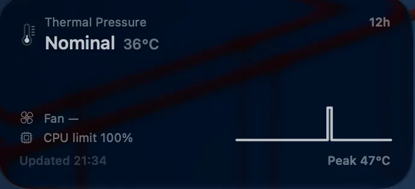

Minitemp es un widget de escritorio que registra la presión térmica, la temperatura del chip, cuánta velocidad del procesador retiene el sistema, y el histórico con las últimas doce horas de estos parámetros.
El widget mediano muestra el nivel en palabras —Nominal, Fair, Serious, Critical—, la temperatura del chip, el límite de velocidad de la CPU, y doce horas de histórico en una línea resumida con la lectura máxima de esa ventana.

El grande muestra ese mismo histórico en una gráfica completa, con una línea discontinua en el umbral de Nominal, y cuatro cifras: el peor nivel alcanzado, el tiempo por encima de Nominal, el límite de velocidad de la CPU, y el ventilador.

Los dos se dibujan con el tintado del escritorio, así que el color que lleva el nivel en la ventana de la app —verde en Nominal, rojo en Critical— no aparece. Lo que se ve detrás es el fondo de escritorio.
Minitemp funciona sin root, sin extensión de kernel y sin tocar el System Management Controller.
La lectura base es ProcessInfo.thermalState: accesible para
cualquier app, sin entitlement, y es la misma señal de cuatro
niveles sobre la que actúa macOS. A eso se le añaden dos lecturas. El límite
de velocidad de la CPU sale de pmset -g therm, que no necesita
root en Apple Silicon. La temperatura del chip sale de los servicios de
sensores HID de IOKit: no documentados, pero legibles sin privilegios.
La temperatura puede faltar; el widget la omite en lugar de sustituirla por un valor. El límite de la CPU muestra 100 % cuando no hay nada que informar.
El ventilador. El widget y la ventana le reservan un sitio y los dos muestran un guion: todavía no hay nada que lo lea.
SwiftUI y WidgetKit, Swift Charts para las dos gráficas, 1.326 líneas, macOS 27. La app y el widget son procesos distintos, así que el histórico vive en un App Group al que llegan los dos: doce horas retenidas, las muestras más antiguas se descartan.
Los dos escriben a ritmos distintos. La app toma una muestra por minuto mientras está abierta. El widget toma una en cada actualización, cada quince minutos, esté abierta o no. La ventana de arriba tiene 232 muestras; doce horas completas a una por minuto serían 720.